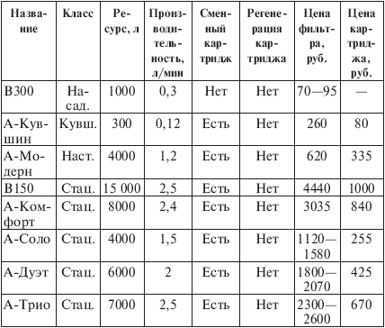
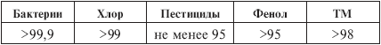
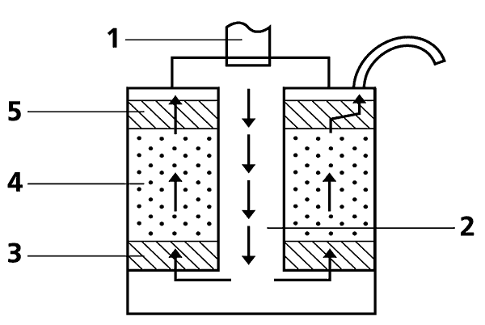
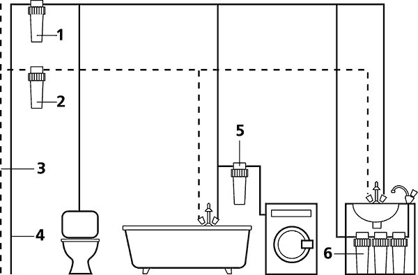

Бытовые фильтры. для очистки воды «Аквафор» .

Российско-американская компания «Аквафор» основана в 1992 г. в Петербурге и на сегодняшний день является крупнейшим в России производителем сорбционных фильтров, которые выпускаются в различных вариантах, от небольших насадок до трехуровневых стационарных систем очистки воды, ее умягчения и предварительной фильтрации. В компании работает более двухсот сотрудников, у нее имеется десяток специализированных магазинов в Петербурге и представительства в пятидесяти российских городах, на Украине, в Молдавии, Белоруссии, Казахстане и Прибалтике. Помимо того, «Аквафор» экспортирует свою продукцию в Западную Европу, на Ближний Восток, в Египет, Китай и Южную Корею.
Обозреть в этой книге все аквафоровские водоочистители не представляется возможным, так как их более полусотни. Коснусь лишь самых популярных: насадка, кувшинный, настольные и стационарные фильтры (табл. 5.2 и 5.3). Основой для них является аквален – тот самый волокнистый углеродный сорбент, который уже упоминался выше. Это не единственная оригинальная разработка «Аквафора», но, видимо, самая значительная. Из рекламных проспектов следует, что фирма считает ее своим главным достижением, запатентованным как в России, так и в США. От прочих углеродных сорбентов аквален отличается, собственно, геометрией: его структура – не гранулы размером в тысячи микрон, а волокна диаметром в десять микрон. За счет этого достигается большая активная поверхность материала, что в сочетании с высокой пористостью аквалена позволяет задерживать разнообразные вредные химические примеси за сравнительно небольшое время контакта сорбента с водой – примерно за 30 с.
Многие фильтры компании выпускаются или могут комплектоваться тремя вариантами модулей: для мягкой воды, жесткой воды и бактерицидным фильтром, в который добавлены специальные вещества, уничтожающие микрофлору, но безвредные для людей. Все фильтры «Аквафора», от дешевых до самых дорогих, очищают воду с одинаковым качеством; различия между ними, определяющие стоимость фильтра, заключаются в производительности, ресурсе и удобстве пользования. Иными словами, из более дорогого фильтра очищенная вода течет быстрее, и хватает его не на два-три месяца, а на год или более долгий срок. Регенерации фильтры «Аквафора» не подлежат. Кроме перечисленных ниже бытовых фильтров, компания «Аквафор» выпускает предфильтры для холодной и горячей воды.
Комментарии.
1. Я пользуюсь аквафоровским фильтром-насадкой В300 пять лет. В эксплуатации он удобен. Его ресурс 800—1000 л, по истечении срока ресурса вода через фильтр проходит с трудом и, наконец, начинает изливаться через верхнее отверстие фильтра. Это своеобразная самоиндикация истечения срока ресурса, но доводить фильтр до такого состояния не нужно; я меняю насадки через 500–600 л.
2. Информация о том, что бактерицидный модуль необратимо уничтожает бактерии и что фильтр ни при каких обстоятельствах не сольет в воду всю накопившуюся в нем грязь, целиком и полностью находится на совести производителей фильтров и государственных служб, выдавших им сертификат (данное замечание относится не только к «Аквафору», но и ко всем остальным фирмам). Однако стоит отметить, что я и все мое семейство пьем воду, профильтрованную аквафоровским фильтром, уже в течение 5 лет. Все живы и относительно здоровы, хотя мы с женой и наша мать (85 лет) относимся к группе повышенного риска: у меня инсулинозависимый диабет, жена – аллергик. Но профильтрованная вода никогда не являлась причинами ни аллергии, ни отравлений.
Таблица 5.2. Фильтры компании «Аквафор»

Примечания.
1. Буква «А» является сокращением слова «Аквафор».
2. Данные для фильтров «Аквафор Дуэт» и «Аквафор Трио» указаны для случая мягкой воды. Для жесткой воды они соответственно равняются: ресурс 4000 и 5000 л; производительность 1,5 и 2 л/мин.
3. Возможна регенерация умягчающих воду картриджей В510-04, которые могут входить в состав фильтров «Аквафор Дуэт» и «Аквафор Трио».
Таблица 5.3. Эффективность очистки воды,

Примечание. По утверждению производителей, данные показатели выдерживаются на протяжении всего периода эксплуатации фильтра.
Во всех фильтрах «Аквафора» реализована трехуровневая очистка воды, и простая модель В300 отличается от более сложных (например, «Аквафор Трио») лишь тем, что все три этапа совмещены в одном небольшом корпусе, тогда как в «Аквафор Трио» эти этапы разнесены по корпусам, в каждом из которых находится по паре картриджей. Рассмотрим процесс очистки на примере В300 (рис. 7). Вода из носика крана 1 попадает во внутренний канал 2, окруженный «шайбами» из следующих материалов: полипропилен 3 – предварительная механическая фильтрация, очистка воды от взвесей и тяжелых металлов; смесь 4 ряда компонентов, в состав которой входит аквален – основная очистка от микроорганизмов, хлора, органики, тяжелых металлов; снова полипропилен 5 – финишная очистка. Вода под давлением опускается в канале вниз, проходит снизу вверх все фильтрующие среды и изливается через закрепленную на корпусе трубку.

Рис. 7. Разрез фильтра «Аквафор B300»

Рис. 8. Полный комплект водоочистительного оборудования
1 – предфильтр для холодной воды; 2 – предфильтр для горячей воды; 3 – труба подачи горячей воды; 4 – труба подачи холодной воды; 5 – предфильтр для стиральной машины; 6 – стационарный фильтр
Наиболее совершенная модель «Аквафор Трио» может быть укомплектована различными сменными модулями, осуществляющими предварительную и глубокую очистку воды, а также ее умягчение. Фирмой предлагается вариант полного комплекта водоочистного оборудования квартиры, изображенный на рис. 8: предфильтры, установленные на подводящие трубы для холодной и горячей воды, дополнительный предфильтр перед стиральной машиной и стационарный фильтр для питьевой воды, расположенный под мойкой.